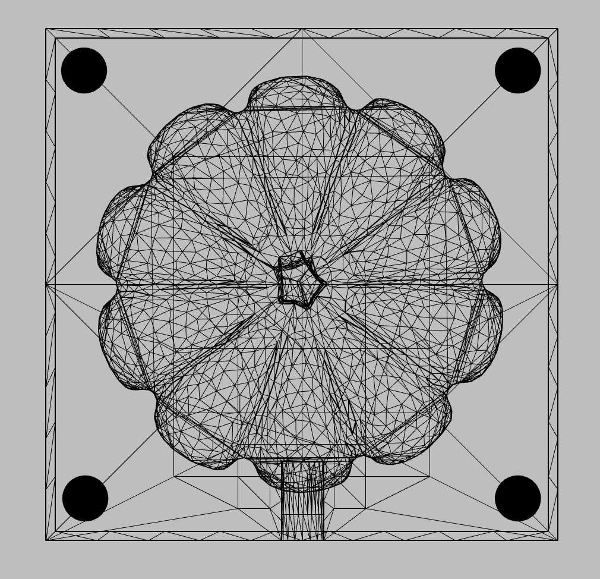
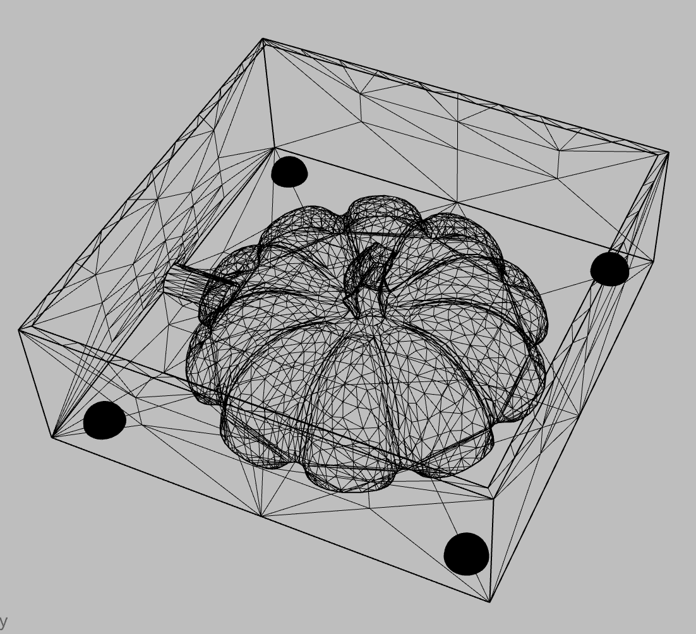
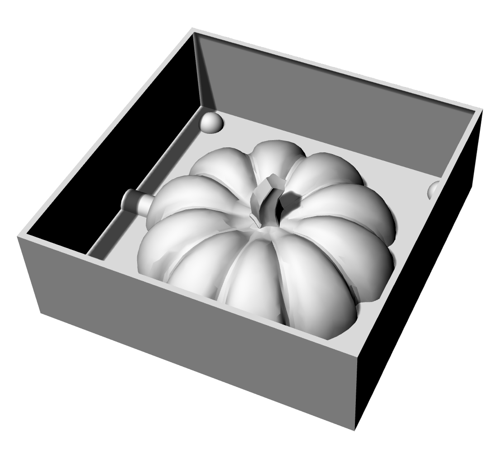

assignment 6: molding & casting part 2
also no clue why it's assignment 6 when it feels like assignment 7...
continuing from molding & casting...
i needed to finish up on my computer-aided design of the pumpkin mold. i ran into a few difficulties regarding shaping the pumpkin mold into the mold that i desired in rhino 7. some problems i ran into included:
- not knowing how to make a hole for sprues
- not knowing how to make the walls or boxes
- realizing that when it is 3d printing, the 3d printing software (dremel) marks the bottom surface as
- rhino crashing on me for a single file at least 5 times in a single day so i had to quickly modify the file and save every single time
- redoing my model at least twice so that it would print properly
  
every time i thought i was getting closer to 3d printing the mold, some errors would come up indicating that it's not a solid. after a few instances of this happening to the same mold, i decided to start over.
onwards to oomoo!
i saw a hot tip from someone, i think it was noelle, on discord that our local art & craftsman supply store had some oomoo in stock so i headed over to grab some. i couldn't find oomoo, so i asked a store representative for help with finding an alternative and they recommended smooth-on. here's a pic of smooth-on.
 once i have 3d printed molds ready, i will stir and mix both Part A and Part B and fill the molds with smooth-on! i would wait for this to cure and then use the new mold to fill the hydrostone plaster with. keep an eye out for that!
once i have 3d printed molds ready, i will stir and mix both Part A and Part B and fill the molds with smooth-on! i would wait for this to cure and then use the new mold to fill the hydrostone plaster with. keep an eye out for that!
documentation!
[ rhino file of pumpkin mold TBD]
acknowledgments & gratitude
props to danli, sara, andy, rama, jess, and junchaofor their support and help with the molding & casting project!!